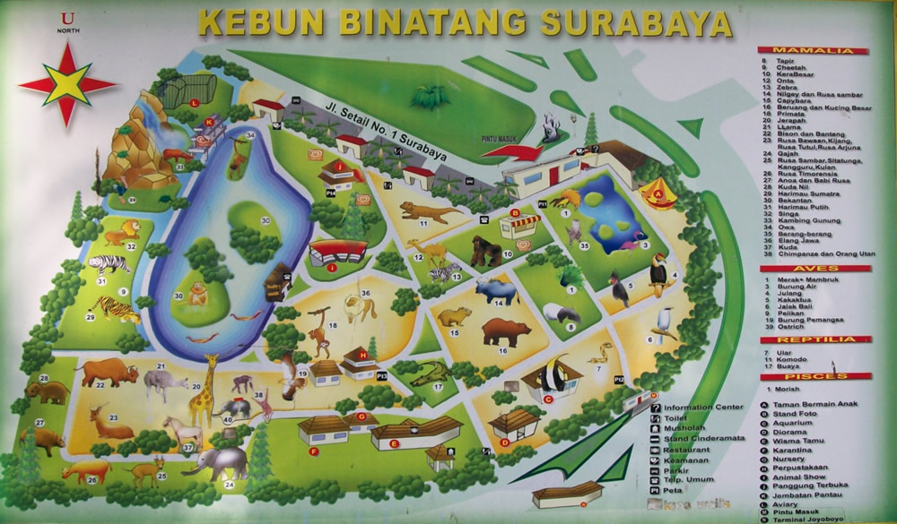

Peta Area Kebun Binatang Surabaya
Lihat tata letak lengkap area Kebun Binatang Surabaya. Mulai dari zona reptil, primata, hingga area satwa Asia dan Afrika. Peta ini memudahkan pengunjung menjelajahi berbagai exhibit menarik yang ada.
